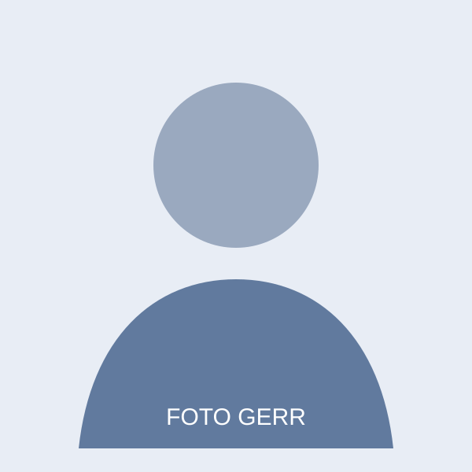

Tentang Saya

Nama saya Gerr, mahasiswa jurusan Informatika. Saya sedang mengembangkan kemampuan di bidang web dan komunikasi visual.
Saya percaya proses belajar terbaik datang dari mencoba, mengevaluasi hasil, dan memperbaiki karya secara bertahap.